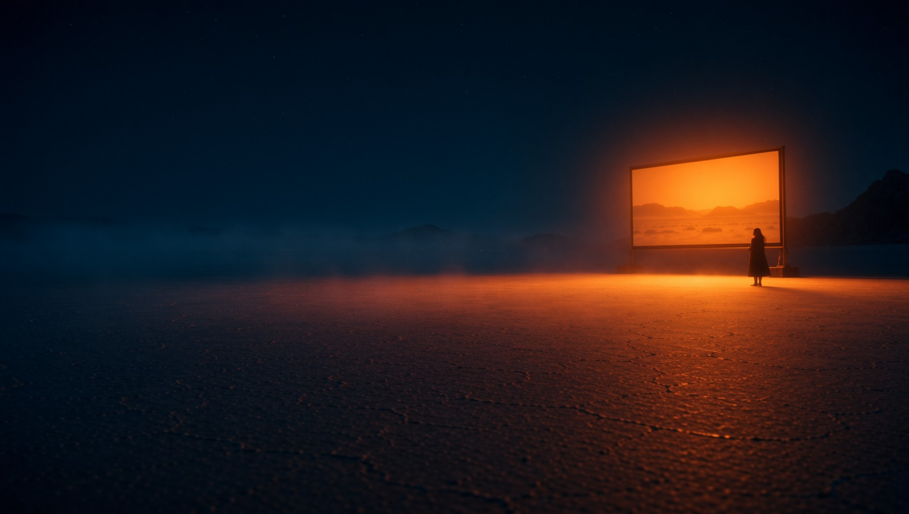
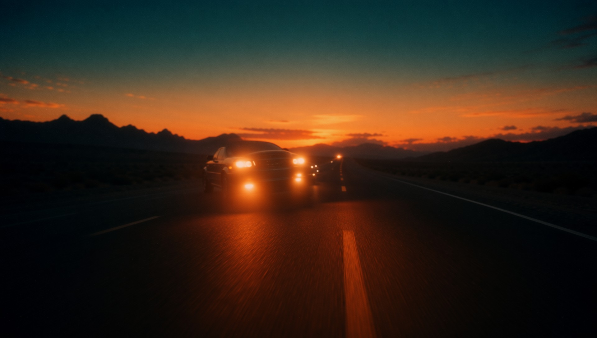
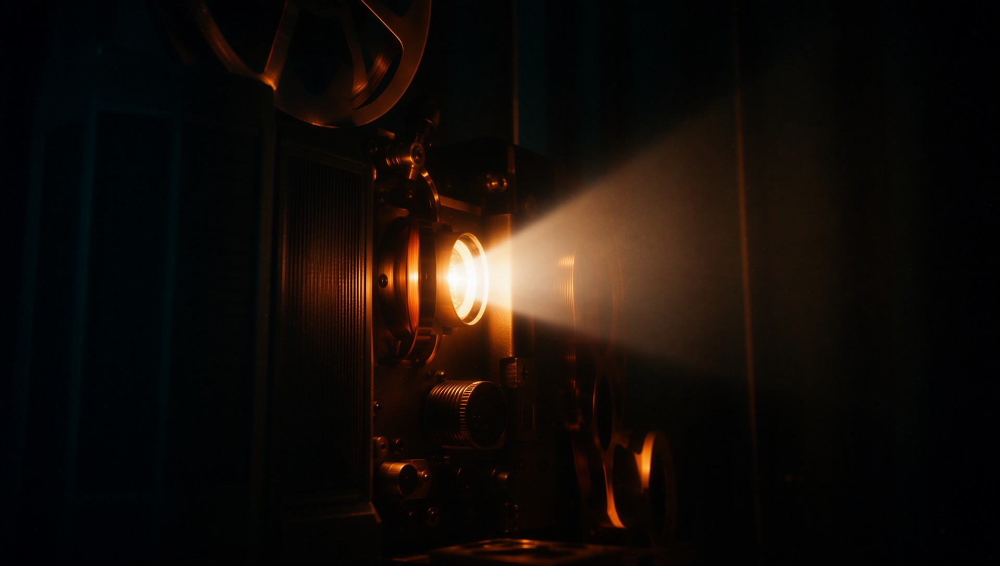

Director
Every frame, rendered natively.


Written in HTML.

CSS
Keyframes / blend / 3D

Composited in Rust.
Skia / Taffy / FFmpeg

No browser in the loop.

Deterministic, frame by frame.

Audio-reactive
Director
HTML in. Cinema out.